Agulhas Current#
Agulhas results
Compared products #
At 00m
- GlobCurrent Total
- WOC inertial global 0m
At 15m
- GlobCurrent Geostrophic
- GlobCurrent Total
- WOC BFN-QG
- WOC inertial global 15m
- NeurOST
- OSCAR
1. Spectrum
▶️ At 0m
▶️ At 15m
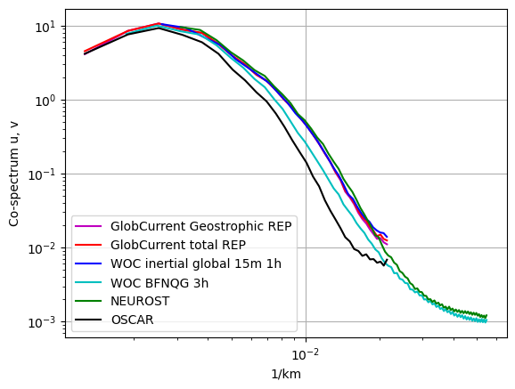
2. Eulerian RMS
▶️ At 0m
Norm errors
| Mean | Norm Quadratic Error (%) | Norm Correlation | Norm Explained Variance (%) | Norm RMSD | Number of Points |
| GlobCurrent Total | 36.938 | 0.799 | 68.680 | 0.244 | 37440.000 |
| WOC inertial global 00m 1h | 34.724 | 0.812 | 71.705 | 0.230 | 37440.000 |
Eastward errors
| Mean | Eastward Quadratic Error (%) | Eastward Correlation | Eastward Explained Variance (%) | Eastward RMSD | Number of Points |
| GlobCurrent Total | 49.368 | 0.867 | 73.832 | 0.239 | 37440.000 |
| WOC inertial global 00m 1h | 46.755 | 0.881 | 79.632 | 0.227 | 37440.000 |
Northward errors
| Mean | Northward Quadratic Error (%) | Northward Correlation | Northward Explained Variance (%) | Northward RMSD | Number of Points |
| GlobCurrent Total | 52.518 | 0.851 | 71.616 | 0.236 | 37440.000 |
| WOC inertial global 00m 1h | 50.555 | 0.863 | 75.159 | 0.227 | 37440.000 |
Standard deviation error
| STD | Direction difference | Number of Points |
| GlobCurrents Total | 43.497 | 37440.000 |
| WOC inertial global 00m 1h | 43.501 | 37440.000 |
Binned plots
GlobCurrents Total
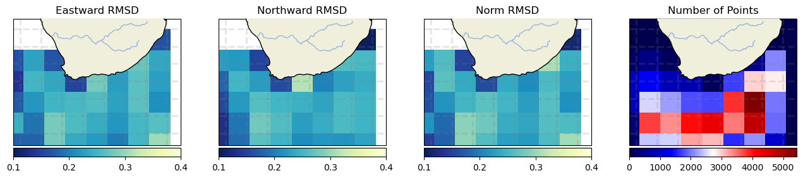
WOC inertial global 00m 1h
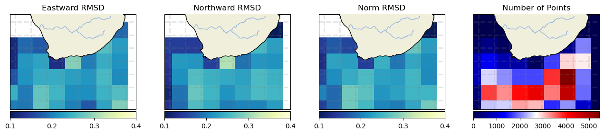
GlobCurrents Total
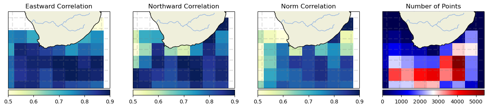
WOC inertial global 00m 1h
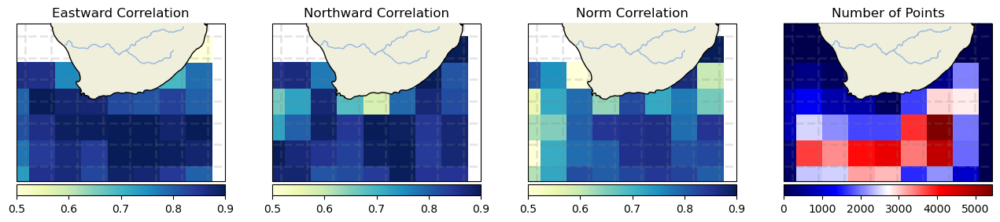
GlobCurrents Total
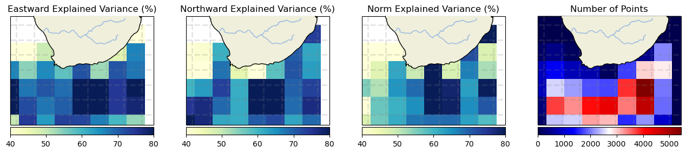
WOC inertial global 00m 1h
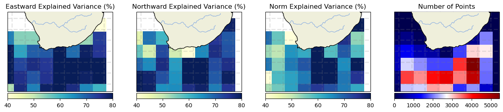
GlobCurrents Total
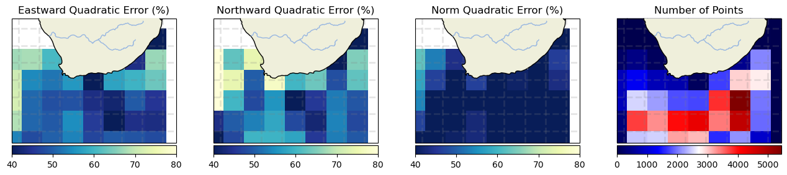
WOC inertial global 00m 1h
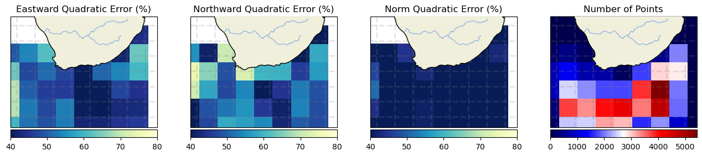
▶️ At 15m
Norm errors
| Mean | Norm Quadratic Error (%) | Norm Correlation | Norm Explained Variance (%) | Norm RMSD | Number of Points |
| GlobCurrent Geostrophic | 37.299 | 0.829 | 69.561 | 0.243 | 44751.000 |
| GlobCurrent Total | 36.555 | 0.835 | 69.632 | 0.238 | 43190.000 |
| WOC inertial global 15m 1h | 35.879 | 0.835 | 69.976 | 0.233 | 43190.000 |
| WOC BFN-QG 3h | 36.708 | 0.837 | 69.562 | 0.239 | 43200.000 |
| NeurOST | 36.237 | 0.848 | 82.632 | 0.236 | 44738.000 |
Eastward errors
| Mean | Eastward Quadratic Error (%) | Eastward Correlation | Eastward Explained Variance (%) | Eastward RMSD | Number of Points |
| GlobCurrent Geostrophic | 47.463 | 0.882 | 75.469 | 0.231 | 44751.000 |
| GlobCurrent Total | 46.562 | 0.886 | 76.783 | 0.226 | 43190.000 |
| WOC inertial global 15m 1h | 45.115 | 0.895 | 78.858 | 0.219 | 43190.000 |
| WOC BFN-QG 3h | 46.636 | 0.887 | 76.638 | 0.227 | 43200.000 |
| NeurOST | 46.866 | 0.888 | 84.905 | 0.228 | 44738.000 |
Northward errors
| Mean | Northward Quadratic Error (%) | Northward Correlation | Northward Explained Variance (%) | Northward RMSD | Number of Points |
| GlobCurrent Geostrophic | 55.176 | 0.836 | 73.912 | 0.238 | 44751.000 |
| GlobCurrent Total | 54.040 | 0.842 | 75.330 | 0.233 | 43190.000 |
| WOC inertial global 15m 1h | 53.252 | 0.848 | 77.290 | 0.230 | 43190.000 |
| WOC BFN-QG 3h | 51.652 | 0.858 | 74.578 | 0.223 | 43200.000 |
| NeurOST | 51.782 | 0.862 | 81.058 | 0.224 | 44738.000 |
Standard deviation error
| STD | Direction difference | Number of Points |
| GlobCurrent Geostrophic | 42.670 | 44751.000 |
| GlobCurrent Total | 42.329 | 43190.000 |
| WOC inertial global 15m 1h | 42.313 | 43190.000 |
| WOC BFN-QG 3h | 43.488 | 43200.000 |
| NeurOST | 43.268 | 44738.000 |
Binned plots
GlobCurrents Geostrophic

GlobCurrents Total

WOC inertial global 15m 1h
WOC BFN-QG 3h

NeurOST

GlobCurrents Geostrophic

GlobCurrents Total
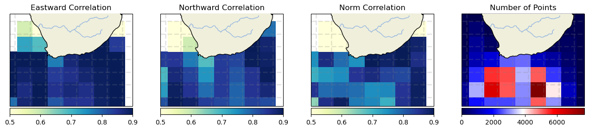
WOC inertial global 15m 1h
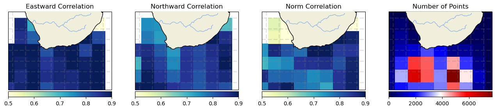
WOC BFN-QG 3h
NeurOST

GlobCurrents Geostrophic

GlobCurrents Total

WOC inertial global 15m 1h

WOC BFN-QG 3h
NeurOST

GlobCurrents Geostrophic
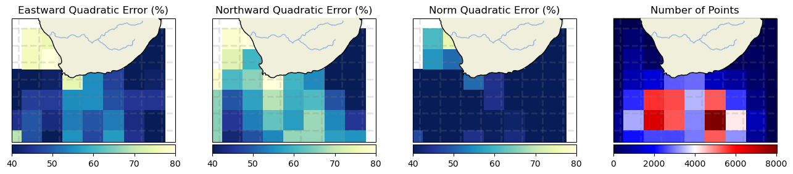
GlobCurrents Total

WOC inertial global 15m 1h

WOC BFN-QG 3h

NeurOST

3. Lagrangian Cumulative Distance
▶️ At 0m
<Figure size 640x480 with 0 Axes>

▶️ At 15m
<Figure size 640x480 with 0 Axes>